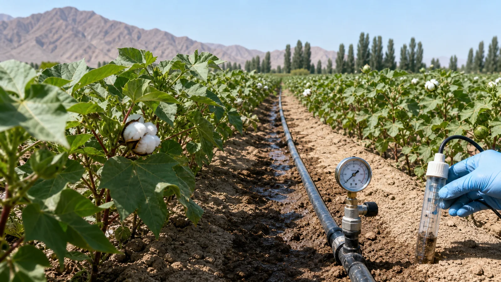
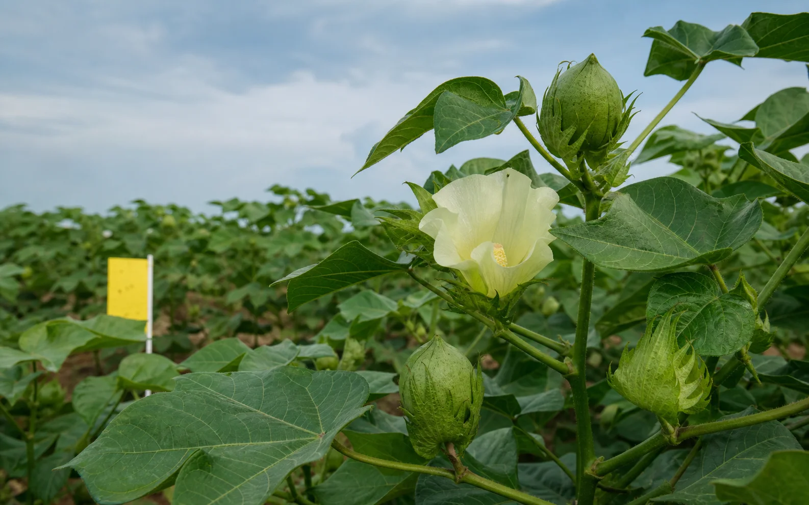
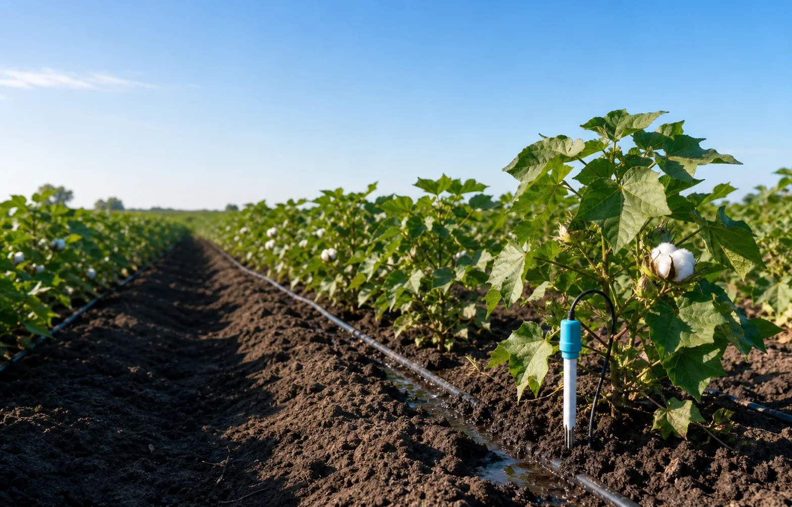

政策解读
今日要闻
农技指导
高温天气来临，花铃期水肥管理这样做

今天适合巡田，午后注意补水

图文学方法，视频看实操，从入门到数字棉田
课程体系 · 完成当前阶段并通过考试后解锁下一阶段
适合新种植户，建立从播种到苗期管理的基础认知
面向有经验的种植户，掌握水肥、株型和病虫害管理
产量诊断、品质提升、数据决策和全周期经营管理
棉花从种子萌发到吐絮采收，要经历播种出苗、苗期、蕾期、花铃期和吐絮期。不同生育阶段的管理目标不同，判断准确才能把水、肥和植保措施用在关键时候。

96.5亩 · 花铃期 · 新陆早78号 · 滴灌
128亩 · 花铃期 · 新陆早72号 · 滴灌
62亩 · 现蕾期 · 新陆早82号 · 滴灌
拍摄棉花叶片、茎秆或棉铃，AI 帮你快速判断可能的问题并提供防治建议。
最近共有 3 次识别记录
土壤湿度偏低，建议傍晚检查墒情后小水滴灌。
高温少雨利于虫害活动，请重点查看田边棉株。

18:26棉花一号田 · 用水 38 方 · 操作人：李建国
09:20 投入 ¥380棉花二号田 · 发现少量棉蚜，已标记位置
07:45 现场记录河西试验田 · 水溶肥 12kg/亩 · 操作人：李建国
18:10 投入 ¥2,680棉花一号田 · 用水 38 方
09:20 投入 ¥380棉花二号田 · 发现少量棉蚜
07:45 现场记录你的 24 小时棉花种植助手
新疆沙湾 · 种棉 12 年